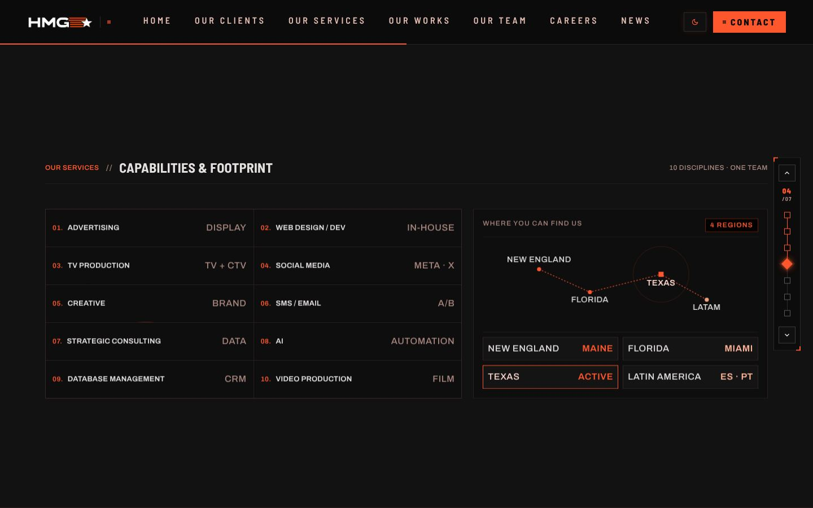
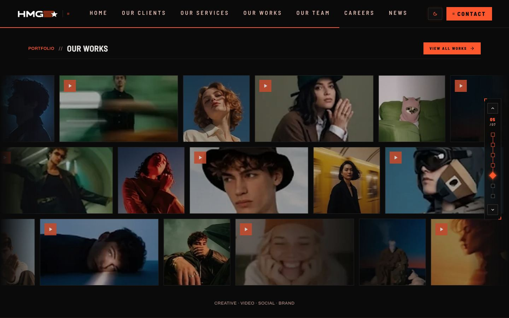

Sección101

El sitio completo de la agencia y un panel propio, más simple que WordPress, para que el equipo publique obras, noticias y perfiles sin escribir código.
- Evento
- Harris Media Group
- Sección
- 101
- Fila
- 2026
- Asiento
- Web
- Función
- Diseño y desarrollo completo
- Herramientas
- Python · Flask · Generador estático · Tailwind CSS · Docker
EG-101-2026
15páginas de clientes
3idiomas en perfiles
400 MBpor video subido
El encargo
La agencia necesitaba renovar su web y dejar de depender de un desarrollador para cada cambio. El equipo creativo sube videos todas las semanas y el sitio tenía que mostrarlos bien en cualquier pantalla.
Lo que hice
- Portada, Nuestros clientes con 15 páginas propias, Servicios, Obras, Equipo con un perfil por persona, Empleos, Noticias y Contacto.
- Panel en /admin: obras con foto, video subido o enlace de YouTube, Vimeo, Facebook o Instagram.
- Editor de noticias con subtítulos, citas, listas e imágenes; borradores y vista previa antes de publicar.
- Perfiles del equipo en inglés, español y portugués.
- Un botón, Publicar cambios, que reconstruye todo el sitio estático.
Decisiones
Sitio estático + panel
El público ve HTML ya generado: carga rápido y no hay base de datos expuesta.
Videos hasta 400 MB
Los MP4 se suben directo; los largos se enlazan y el sitio muestra la portada oficial.
Fotos optimizadas solas
El panel recibe JPG o PNG y los comprime sin que nadie lo piense.


